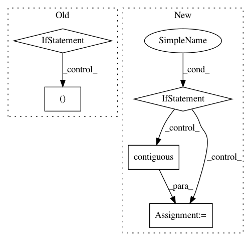

5c38bd81f92f4fb3dc29c8a69c84027b95d694af,torchnlp/nn/sru.py,SRU_Compute,backward,#SRU_Compute#Any#Any#,415
Before Change
return h, last_hidden
def backward(self, grad_h, grad_last):
if self.bidirectional:
grad_last = torch.cat((grad_last[0], grad_last[1]), 1)
bidir = 2 if self.bidirectional else 1
u, x, bias, init, mask_h = self.saved_tensors
c = self.intermediate
length = x.size(0) if x.dim() == 3 else 1
After Change
// Normal use
grad_x = x.new(*x.size()) if k_ == 3 else None
if k_ == 3:
x_ptr = x.contiguous() * scale_x if scale_x != 1 else x.contiguous()
x_ptr = x_ptr.data_ptr()
else:
x_ptr = 0
stream, _, _, bwd_func, bibwd_func = self.get_functions()
FUNC = bwd_func if not self.bidirectional else bibwd_func
FUNC(
args=[
In pattern: SUPERPATTERN
Frequency: 3
Non-data size: 5
Instances
Project Name: PetrochukM/PyTorch-NLP
Commit Name: 5c38bd81f92f4fb3dc29c8a69c84027b95d694af
Time: 2018-03-31
Author: petrochukm@gmail.com
File Name: torchnlp/nn/sru.py
Class Name: SRU_Compute
Method Name: backward
Project Name: asappresearch/sru
Commit Name: faf3aa876462323f2fa721ebd633752d6489808f
Time: 2020-09-18
Author: taolei@csail.mit.edu
File Name: sru/modules.py
Class Name: SRU
Method Name: forward
Project Name: maciejkula/spotlight
Commit Name: bc51dbc0c56f68ed30857755026633f78eef1ae8
Time: 2017-08-20
Author: maciej.kula@gmail.com
File Name: spotlight/layers.py
Class Name: BloomEmbedding
Method Name: forward